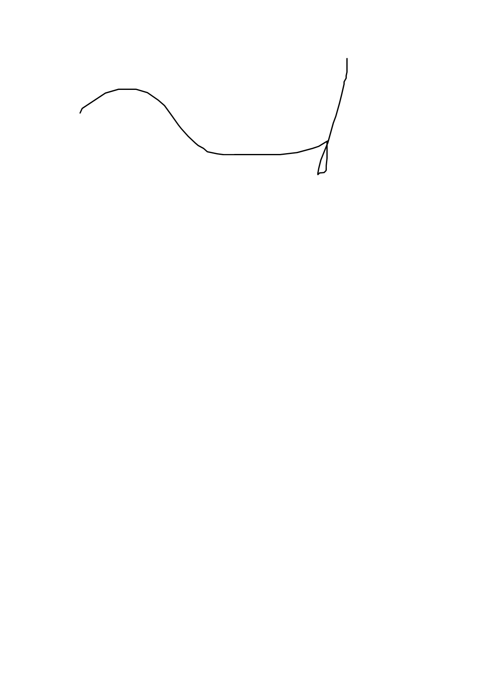
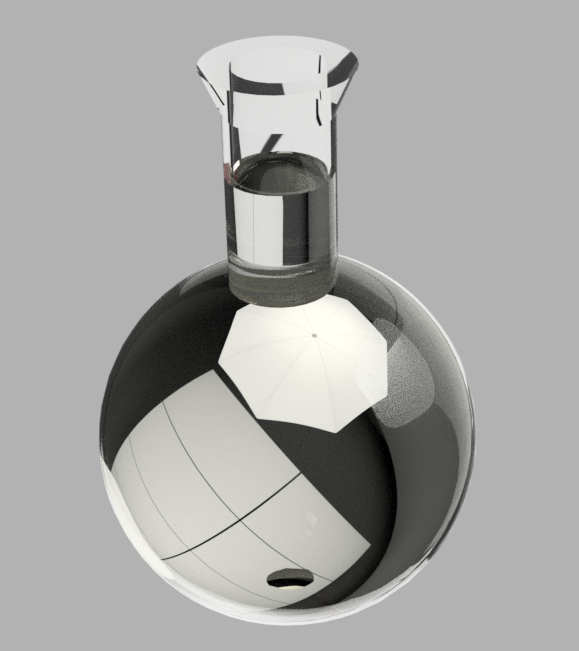
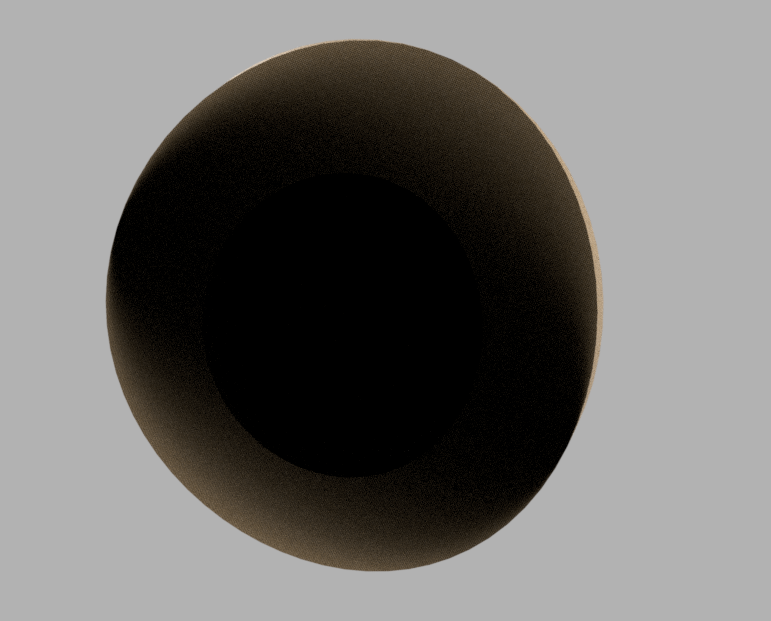
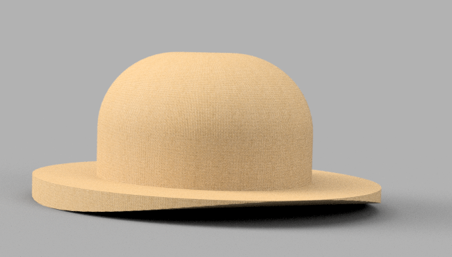

Object 1: Tutorial Cube
GG ez

Object 2: Lampshade
I followed lucas's tutorial to create this and the only trouble I had was that it looks like a vase. :|
Object 3: Flask Pt2
I rendered this one in glass and metal so that my liquid would be mercury. It looks...alright, nothing really cool going on, hole in the top and filled with liquid.
Object 4: Bowler
Why was the bowler easier to make in TinkerCAD? I have no idea, this thing looks like crap and I hate it. This is actually my 3rd attempt the other two I got rid of.
 